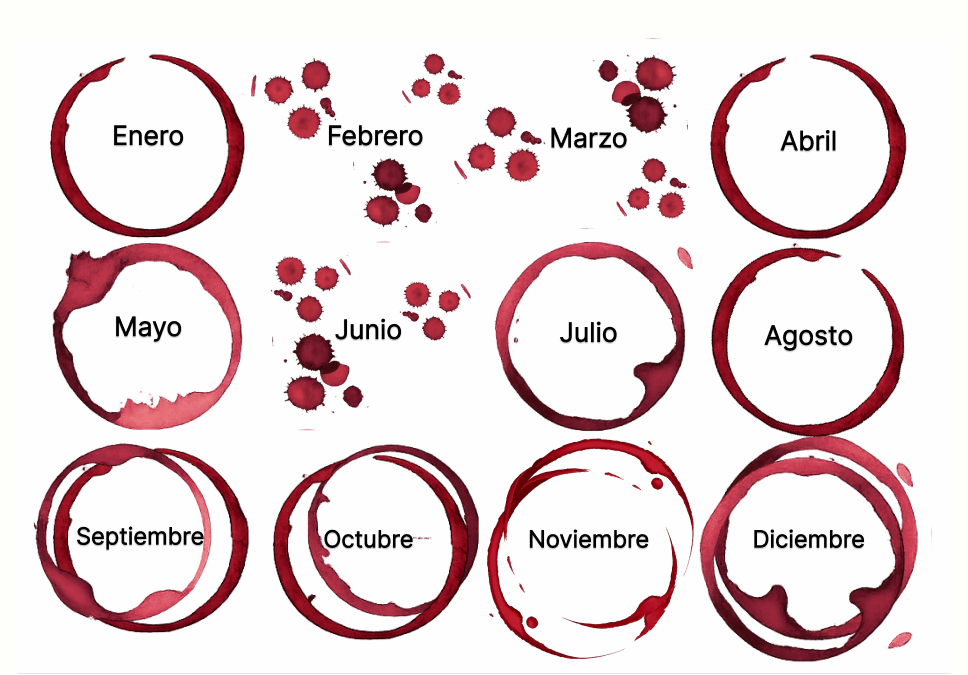

Malbec
Malbec
Mendoza
Tinto profundo, fruta madura, violetas y taninos amables.
¿Qué hay detrás de una copa?
Tu relación con el vino
¿Qué tan presente está el vino en tu vida?
¿Cada cuánto aparece una copa?
¿En qué momentos lo elegís?
¿Cuánto te importa elegir la botella?
De tu hábito al planeta
¿Cómo se ve tu consumo cuando lo ponemos en escala mundial?
Tu resultado es apenas una entrada: el vino no ocupa el mismo lugar en todos lados. Hay países donde aparece poco y otros donde se vuelve mesa, celebración y costumbre compartida.
Consumo total por país
Un mapa para mirar la copa en escala mundial
Base: consumo total de vino, en millones de hectolitros. Pasá el cursor por un punto para leer el dato y un detalle del país.
Argentina
Cuando el consumo también cuenta una costumbre
En algunos países el vino no solo se consume: organiza comidas, acompaña celebraciones y aparece como parte de una escena social. Argentina entra ahí, con una copa muy ligada a la mesa compartida.
8,8
millones de hectolitros de consumo total anual en la base.
Botellas de siempre
Después del calendario, aparecen los vinos que más se repiten en la mesa argentina
La escena baja de escala: de los meses y las costumbres pasamos a las botellas. Algunas uvas se volvieron casi un idioma propio para hablar del vino argentino.

Producción por provincia
La copa también tiene un mapa adentro
Después de mirar cuándo aparece el vino, la historia baja al territorio: no todas las provincias producen igual, y esa diferencia también explica qué botellas llegan con más fuerza a la mesa argentina.
Cabernet Sauvignon
Cabernet Sauvignon
Cuyo
Más estructura, notas de cassis, pimienta y un final seco.
Bonarda
Bonarda
San Juan
Frutal, jugoso y directo: cereza, ciruela y especias suaves.
Torrontés
Torrontés
Salta
Blanco aromático, floral y cítrico, muy asociado al norte argentino.
Chardonnay
Chardonnay
Patagonia
Blanco versátil: puede ser fresco, cremoso o pasar por madera.
Composición química
Dentro de la copa.
Agua
La base del vino: sostiene volumen, frescura y textura.
Alcohol
Aporta cuerpo, calidez y parte de la sensación en boca.
Ácidos
Dan frescura, tensión y equilibrio al sabor.
Taninos, azúcares y aromas
Son pocos en cantidad, pero definen color, perfume y carácter.
Cata guiada
Aprendamos a catar vino.
Una copa y cuatro gestos para mirar el vino con más atención.
Paso 1 · Mirar
Mirar
Observá el color y la intensidad: antes de oler o probar, la copa ya empieza a contar cuerpo, edad y concentración.
Paso 2 · Girar
Girar
La copa gira para liberar aromas y dejar ver cómo el vino se mueve contra el vidrio.
Paso 3 · Oler
Oler
Acercá la nariz e identificá familias: fruta, flores, hierbas, especias o madera.
cereza
flores
frutas
hierbas
especias
Paso 4 · Probar
Probar
Ahora entra la textura: acidez, alcohol, taninos, dulzor y persistencia aparecen juntos.